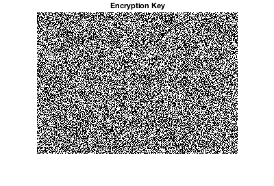
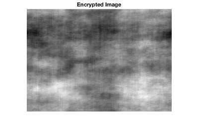
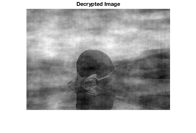

MATLAB Programming: Image Encryption Project
by Andre Munoz
Back
This project encrypts an image and provides a unique encryption key to send on to a recipient.
If the recipient has a copy of the algorithm, unique key and encrypted
image, then the image can be decrypted to see its contents.
Contents
Preparation
Reads in the image to be encrypted.
clear % Clears previous varables in the work space. % Reads in image for preparation and generating encrytion key. I = imread('picture.jpg'); % Converts RGB to grayscale. if size(I,3)==3 II = rgb2gray(I); else II = I; end H = size(II); [l,w] = size(II); % Passing the II to tasks later was problematic, so it was saved % and imported later. The joys of MATLAB :) imwrite(II,'Image.tif'); imshow(II) title('Image')

Generating Encryption Key
Creates a key as a random binary array the same size as the image.
AI = zeros([l,w]); E = l*w; % Makes the array have 0.5 1s and 0s. Ni = round(0.5*E); AI(randperm(numel(AI),Ni)) = 1; % Passing the A to tasks later was problematic, so it was saved % and imported later. The joys of MATLAB :) csvwrite('Key.txt',AI) imshow(AI) title('Encryption Key')
Encrypting Image
First the encrytion key is prepared for encoding.
A1 = importdata('Key.txt'); %Converts grayscale antimask to binary. A = double(A1); % Converts from logical to double. Asize = size(A); [Ah,Aw] = size(A1); Ae = (Asize*2)-1; % 2x2 mosaic template minus one row and column. f = floor((Ae-Asize)/2); % Working out amount to pad array in mosaic template. A_MOS = padarray(A,f,'circular'); % Padds array and creates a mosaicked mask. open = sum(A(:) == 1); % Counts number of 1s in the array. OF = (open/(Ah*Aw)); % Finds open fraction. I = 1; % Sets open element at 1. O = OF/(OF-1); % Sets calculated value for closed elements G = 2*A_MOS-1; % sets binary 0 to -1 %Sets. G( G==1 )= I; % Changes open elements. G( G==-1 )= O; % Changes closed elements. % The images is imported. O = imread('Image.tif'); O1 = imresize(O,[Ah Aw]); % Resize image. [Oh,Ow] = size(O1); D = normxcorr2(O1,A_MOS); % Correlates the image with key to encrypt. [Dh,Dw] = size(D); % Dimension of correlated array. dh = floor(Dh-Oh)/2; dw = floor(Dw-Ow)/2; COR = imcrop(D,[dw dh Ow-1 Oh-1]); % Crop image COR1 = mat2gray(COR); % Converts %binary to grayscale to view. imshow(COR1) title('Encrypted Image')
Decrypting Image
Encrypts the image using cross-correlation.
R = normxcorr2(COR,G); % Correlates the ecrypted image with key to decrypt. [Rh,Rw] = size(R); Rh = floor(Rh-Oh)/2; Rw = floor(Rw-Ow)/2; rCOR = imcrop(R,[Rw Rh Ow-1 Oh-1]); % Crop image rCOR1 = mat2gray(rCOR); % Converts binary to grayscale to view. delete Key.txt delete Image.tif imshow(rCOR1) title('Decrypted Image')
Summary
The encrypted image has been successfully decrypted. However, the decrypted image appears slightly noisey due to the autocorrelation properties of the randomly generated encrytion key. This can be addressed by using other decoding methods, such as blind deconvolution or using keys with better properties. Nonetheless, the project was just a quick demonstration of some of my programming skills.